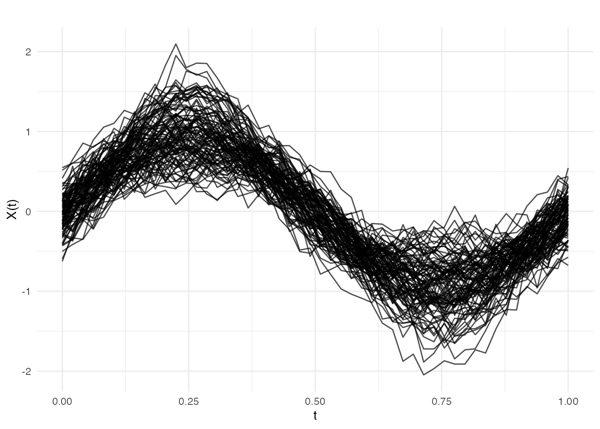
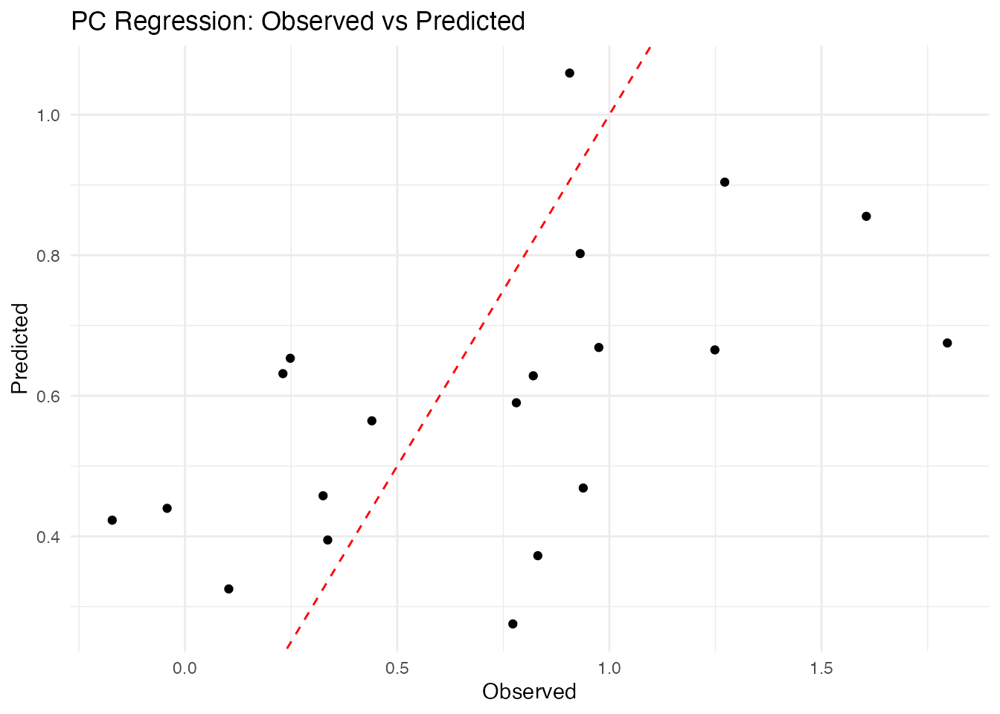

Introduction
Functional regression extends classical regression to handle functional predictors or responses. The most common setting is scalar-on-function regression, where a scalar response is predicted from a functional predictor .
The Functional Linear Model
The foundational model in functional regression is the functional linear model:
where:
- is the scalar response for observation
- is the functional predictor observed over domain
- is the intercept
- is the coefficient function (unknown, to be estimated)
- are i.i.d. errors
The integral can be interpreted as a weighted average of the functional predictor, where determines the importance of each time point in predicting .
The Estimation Challenge
Unlike classical regression where we estimate a finite number of parameters, here we must estimate an entire function . This is an ill-posed inverse problem: infinitely many solutions may exist, and small changes in the data can lead to large changes in the estimate.
fdars provides three main approaches to regularize this problem:
-
Principal Component Regression
(
fregre.pc) — dimension reduction via FPCA -
Basis Expansion Regression
(
fregre.basis) — represent in a finite basis -
Nonparametric Regression (
fregre.np) — make no parametric assumptions
library(fdars)
#>
#> Attaching package: 'fdars'
#> The following objects are masked from 'package:stats':
#>
#> cov, decompose, deriv, median, sd, var
#> The following object is masked from 'package:base':
#>
#> norm
library(ggplot2)
theme_set(theme_minimal())
# Generate example data
set.seed(42)
n <- 100
m <- 50
t_grid <- seq(0, 1, length.out = m)
# Functional predictors
X <- matrix(0, n, m)
for (i in 1:n) {
X[i, ] <- sin(2 * pi * t_grid) * rnorm(1, 1, 0.3) +
cos(4 * pi * t_grid) * rnorm(1, 0, 0.2) +
rnorm(m, sd = 0.1)
}
fd <- fdata(X, argvals = t_grid)
# True coefficient function
beta_true <- sin(2 * pi * t_grid)
# Generate response: Y = integral(beta * X) + noise
y <- numeric(n)
for (i in 1:n) {
y[i] <- sum(beta_true * X[i, ]) / m + rnorm(1, sd = 0.5)
}
plot(fd)
Principal Component Regression
Principal component regression (PCR) reduces the infinite-dimensional problem to a finite-dimensional one by projecting the functional data onto its principal components.
Mathematical Formulation
Using functional principal component analysis (FPCA), each curve can be represented as:
where are the eigenfunctions (principal components) and are the PC scores.
Truncating at components and substituting into the functional linear model gives:
where . This is now a standard multiple linear regression with predictors .
The coefficient function is reconstructed as:
Choosing the Number of Components
The key tuning parameter is , the number of principal components:
- Too few: underfitting, missing important variation in
- Too many: overfitting, including noise components
Cross-validation or information criteria (AIC, BIC) can guide the choice.
Cross-Validation for Component Selection
# Find optimal number of components
cv_pc <- fregre.pc.cv(fd, y, kmax = 10)
cat("Optimal number of components:", cv_pc$ncomp.opt, "\n")
#> Optimal number of components:
cat("CV error by component:\n")
#> CV error by component:
print(round(cv_pc$cv.error, 4))
#> 1 2 3 4 5 6 7 8 9 10 11
#> 0.2674 0.2700 0.2720 0.2735 0.2785 0.2735 0.2691 0.2718 0.2728 0.2744 0.2735
#> 12 13 14 15
#> 0.2746 0.2714 0.2703 0.2746Prediction
# Split data
train_idx <- 1:80
test_idx <- 81:100
fd_train <- fd[train_idx, ]
fd_test <- fd[test_idx, ]
y_train <- y[train_idx]
y_test <- y[test_idx]
# Fit on training data
fit_train <- fregre.pc(fd_train, y_train, ncomp = 3)
# Predict on test data
y_pred <- predict(fit_train, fd_test)
# Evaluate
cat("Test RMSE:", round(pred.RMSE(y_test, y_pred), 3), "\n")
#> Test RMSE: 0.457
cat("Test R2:", round(pred.R2(y_test, y_pred), 3), "\n")
#> Test R2: 0.219Basis Expansion Regression
Basis expansion regression represents both the functional predictor and the coefficient function using a finite set of basis functions, reducing the infinite-dimensional problem to a finite-dimensional one.
Mathematical Formulation
Let be a set of basis functions (e.g., B-splines or Fourier). We expand:
Substituting into the functional linear model:
This simplifies to:
where are the basis coefficients of , are the unknown coefficients of , and is the inner product matrix with entries .
Ridge Regularization
To prevent overfitting (especially with many basis functions), we add a roughness penalty. The penalized least squares objective is:
The penalty discourages rapid oscillations. In matrix form:
where is the roughness penalty matrix with .
The solution is:
Basis Choice
- B-splines: Flexible, local support, good for non-periodic data
- Fourier: Natural for periodic data, global support
Basic Usage
# Fit basis regression with 15 B-spline basis functions
fit_basis <- fregre.basis(fd, y, nbasis = 15, type = "bspline")
print(fit_basis)
#> Functional regression model
#> Number of observations: 100
#> R-squared: 0.5805754Regularization
The lambda parameter controls regularization:
# Higher lambda = more regularization
fit_basis_reg <- fregre.basis(fd, y, nbasis = 15, type = "bspline", lambda = 1)Cross-Validation for Lambda
# Find optimal lambda
cv_basis <- fregre.basis.cv(fd, y, nbasis = 15, type = "bspline",
lambda = c(0, 0.001, 0.01, 0.1, 1, 10))
cat("Optimal lambda:", cv_basis$lambda.opt, "\n")
#> Optimal lambda:
cat("CV error by lambda:\n")
#> CV error by lambda:
print(round(cv_basis$cv.error, 4))
#> 0 0.001 0.01 0.1 1 10
#> 0.5967 0.5926 0.5605 0.4299 0.3209 0.2977Fourier Basis
For periodic data, use Fourier basis:
fit_fourier <- fregre.basis(fd, y, nbasis = 11, type = "fourier")Nonparametric Regression
Nonparametric functional regression makes no parametric assumptions about the relationship between and . Instead, it estimates directly using local averaging techniques.
The General Framework
Given a new functional observation , the predicted response is:
where are weights that depend on the “distance” between and the training curves . Different methods define these weights differently.
Functional Distance
A key component is the semimetric measuring similarity between curves. Common choices:
- metric:
- metric:
- PCA-based semimetric: using PC scores
Nadaraya-Watson Estimator
The Nadaraya-Watson (kernel regression) estimator uses:
where is a kernel function and is the bandwidth controlling the smoothness:
- Small : weights concentrated on nearest neighbors (low bias, high variance)
- Large : weights spread across many observations (high bias, low variance)
Common kernels include:
| Kernel | Formula |
|---|---|
| Gaussian | |
| Epanechnikov | |
| Uniform |
k-Nearest Neighbors
The k-NN estimator averages the responses of the closest curves:
where is the set of indices of the nearest neighbors of .
Two variants are available:
-
Global k-NN (
kNN.gCV): single selected by leave-one-out cross-validation -
Local k-NN (
kNN.lCV): adaptive that may vary per prediction point
Bandwidth Selection
# Cross-validation for bandwidth
cv_np <- fregre.np.cv(fd, y, h.seq = seq(0.1, 1, by = 0.1))
cat("Optimal bandwidth:", cv_np$h.opt, "\n")
#> Optimal bandwidth:Different Kernels
# Epanechnikov kernel
fit_epa <- fregre.np(fd, y, Ker = "epa")
# Available kernels: "norm", "epa", "tri", "quar", "cos", "unif"Comparing Methods
# Fit all methods on training data
fit1 <- fregre.pc(fd_train, y_train, ncomp = 3)
fit2 <- fregre.basis(fd_train, y_train, nbasis = 15)
fit3 <- fregre.np(fd_train, y_train, type.S = "kNN.gCV")
# Predict on test data
pred1 <- predict(fit1, fd_test)
pred2 <- predict(fit2, fd_test)
pred3 <- predict(fit3, fd_test)
# Compare performance
results <- data.frame(
Method = c("PC Regression", "Basis Regression", "k-NN"),
RMSE = c(pred.RMSE(y_test, pred1),
pred.RMSE(y_test, pred2),
pred.RMSE(y_test, pred3)),
R2 = c(pred.R2(y_test, pred1),
pred.R2(y_test, pred2),
pred.R2(y_test, pred3))
)
print(results)
#> Method RMSE R2
#> 1 PC Regression 0.4570245 0.21884391
#> 2 Basis Regression 0.8989962 -2.02255778
#> 3 k-NN 0.4935318 0.08906132Visualizing Predictions
# Create comparison data frame
df_pred <- data.frame(
Observed = y_test,
PC = pred1,
Basis = pred2,
kNN = pred3
)
# Observed vs predicted
ggplot(df_pred, aes(x = Observed, y = PC)) +
geom_point() +
geom_abline(intercept = 0, slope = 1, linetype = "dashed", color = "red") +
labs(title = "PC Regression: Observed vs Predicted",
x = "Observed", y = "Predicted") +
theme_minimal()
Method Selection Guide
When to Use Each Method
Principal Component Regression
(fregre.pc):
- Best when the functional predictor has clear dominant modes of variation
- Computationally efficient for large datasets
- Interpretable: each PC represents a pattern in the data
- Use when is small relative to the complexity of
Basis Expansion Regression
(fregre.basis):
- Best when you believe is smooth
- Use B-splines for local features, Fourier for periodic patterns
- The penalty parameter provides automatic regularization
- Good when you want to visualize and interpret
Nonparametric Regression
(fregre.np):
- Best when the relationship between and may be nonlinear
- Makes minimal assumptions about the data-generating process
- Computationally more expensive (requires distance calculations)
- May require larger sample sizes for stable estimation
Prediction Metrics
Model performance is evaluated using standard regression metrics. Given observed values and predictions :
| Metric | Formula | Interpretation |
|---|---|---|
| MAE | Average absolute error | |
| MSE | Average squared error | |
| RMSE | Error in original units | |
| Proportion of variance explained |
References
Foundational texts:
- Ramsay, J.O. and Silverman, B.W. (2005). Functional Data Analysis, 2nd ed. Springer.
- Ferraty, F. and Vieu, P. (2006). Nonparametric Functional Data Analysis: Theory and Practice. Springer.
- Horváth, L. and Kokoszka, P. (2012). Inference for Functional Data with Applications. Springer.
Key methodological papers:
- Cardot, H., Ferraty, F., and Sarda, P. (1999). Functional Linear Model. Statistics & Probability Letters, 45(1), 11-22.
- Reiss, P.T. and Ogden, R.T. (2007). Functional Principal Component Regression and Functional Partial Least Squares. Journal of the American Statistical Association, 102(479), 984-996.
- Goldsmith, J., Bobb, J., Crainiceanu, C., Caffo, B., and Reich, D. (2011). Penalized Functional Regression. Journal of Computational and Graphical Statistics, 20(4), 830-851.
On nonparametric functional regression:
- Ferraty, F., Laksaci, A., and Vieu, P. (2006). Estimating Some Characteristics of the Conditional Distribution in Nonparametric Functional Models. Statistical Inference for Stochastic Processes, 9, 47-76.